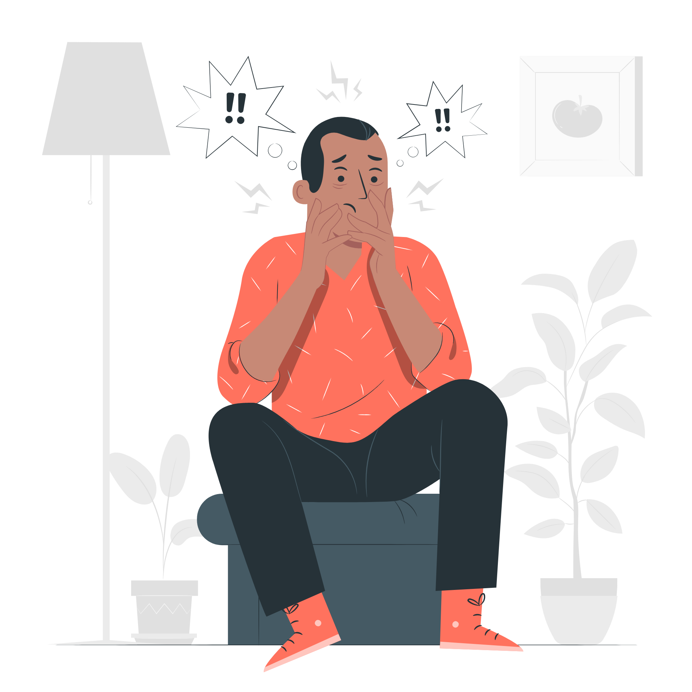

خانه >>> سلامت روان
سلامت روان به معنی آرامش فیزیکی و کمبود سر و صدا نیست بلکه معنایی کلی تری دارد و کیفیت زندگی بر آن تاثیر میگذارد. سلامت روان روی طرز فکر، احساس و رفتار روزانه شما تاثیر دارد و همچنین روی توانایی شما در مواجهه با استرس ، غلبه بر چالش های زندگی ، ساخت روابط ، ریکاوری بعد از سختی ها ، عادت های شما ، حس رضایتتان از زندگی ، روی اهداف و حتی یادگیری شما تاثیرگزار می باشد. سلامت قوی ذهن به این معنا نیست که هیچ مشکلی نداشته باشید ، یا احساس افسرگی نکنید و یا در روابط خود مشکل نداشته باشید. سلامت روانی و احساسی چیزی فراتر از رهایی از مشکلات افسردگی ، اضطراب و یا دیگر مشکلات روانشناسی می باشد
سلامت روان ؛ یعنی داشتن احساس آرامش و امنیت درون و به دور بودن از اضطراب، افسردگی و تعارض های مزمن روانی. از منظر دیگر، بهداشت روانی؛ یعنی بهره مندی از سلامت ذهن و اندیشه و تفکر. درصد قابل توجهی از بیماری های جسمانی، ریشه روان شناختی دارند و بهره مندی از بهداشت روان می تواند بر سلامت جسم اثر مثبتی داشته باشد. از آن سو، سلامت جسم نیز بستر مناسبی برای رسیدن به احساس امنیت درون و سلامت ذهن و روان است. بهداشت روانی، قوانین مربوط به سلامت عاطفی را در برمی گیرد، به گونه ای که فرد بتواند مشکلات را به آرامی پشت سرگذارد؛ به شرط آنکه بداند چگونه از فشارهای روانی و نگرانی پیش گیری کند. کارشناسان سازمان بهداشت جهانی از «بهداشت روانی» به «سلامت روان و فکر» تعبیر کرده اند و می گویند: «سلامت فکر، عبارت است از قابلیت ارتباط موزون و هماهنگ با دیگران، تغییر و اصلاح محیط فردی و اجتماعی و حل تضادها و تمایلات شخصی به طور منطقی، عادلانه و مناسب.
نشانی : ايران، تهران، ميدان رسالت، خیابان هنگام، خیابان دانشگاه، دانشگاه علم و صنعت ايران
پاسخگویی مشکلات: تلفن مستفیم ۷۳۲۲۵۹۵۹ ۹۸۲۱+ تلفن داخلی ۵۹۵۹
فکس: ۷۳۰۲۱۲۰۰ ۹۸۲۱+
ایمیل: its [at] iust.ac.ir